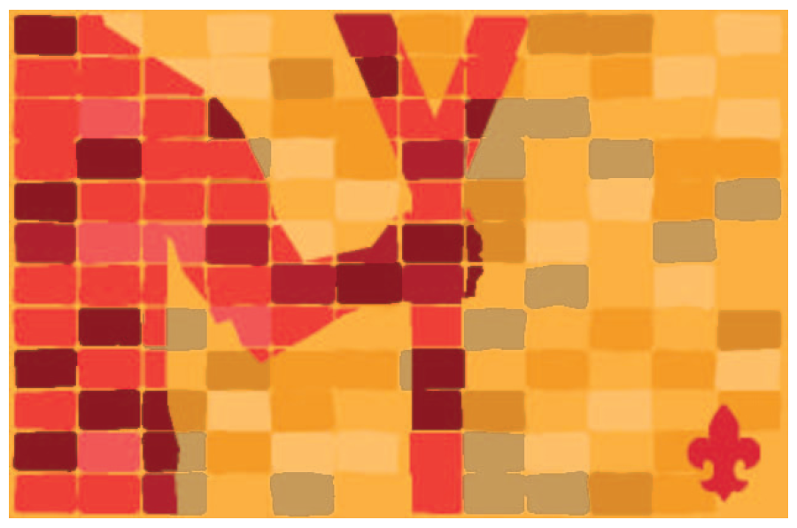
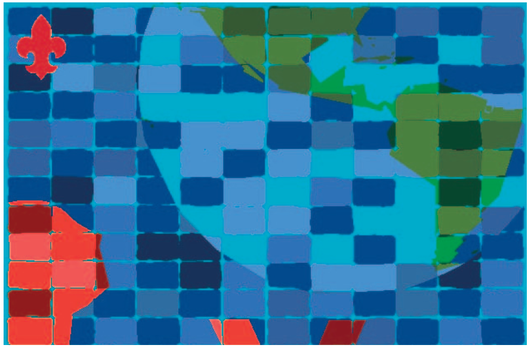

<link rel="stylesheet" type="text/css" href="../css/pioneiro.css">

<section id="ramo-pioneiro">
    <section class="logo-pioneiro">
        
    </section>

    <section class="informacao-pioneiro">
        <div class="img-sinal">
            
        </div>
        <p>
            A partir dos 18 anos, e até os 21 incompletos, integramos o Ramo Pioneiro. Nossa equipe forma o clã, e é
            onde
            nos apoiamos e descobrimos interesses em comum. Levamos a sério nosso lema “Servir”, já que vivemos uma
            aventura que não é mais simbólica ou imaginária, pois experimentamos o papel real do adulto por meio do
            serviço e das atividades de desenvolvimento comunitário.
        </p>
        <p>

            O cotidiano no clã nos dá bastante liberdade, mas já estamos cientes da responsabilidade que isso traz –
            somos
            nós que organizamos nossas próprias atividades. Esse é o período em que entramos na vida adulta, e estamos
            concluindo a formação de nossos valores e princípios.
        </p>
        <p>
            Mesmo estando no clã, já podemos participar como adultos voluntários em outros Ramos atuar ativamente em
            nossas
            comunidades. Prestes a completar 21 anos, é chegada a hora de encerrar nossa caminhada como jovem no
            Movimento
            Escoteiro. A Cerimônia de Partida marca essa etapa, que pode ser seguida pela vida escoteira no papel de
            voluntário, como escotista ou dirigente.
        </p>

        <h2>
            Temos nossa LEI, que é composta composta por 10 artigos:
        </h2>      
            1 - O escoteiro é honrado e digno de confiança.<br>
            2 - O escoteiro é leal.<br>
            3 - O escoteiro está sempre alerta para ajudar o próximo e pratica diariamente uma boa ação.<br>
            4 - O escoteiro é amigo de todos e irmão dos demais escoteiros.<br>
            5 - O escoteiro é cortês.<br>
            6 - O escoteiro é bom para os animais e as plantas.<br>
            7 - O escoteiro é obediente e disciplinado.<br>
            8 - O escoteiro é alegre e sorri nas dificuldades.<br>
            9 - O escoteiro é econômico e respeita o bem alheio.<br>
            10 - O escoteiro é limpo de corpo e alma.<br>
        <br>
        <h2>
            Depois de cumprirmos nossos primeiros passos (Periodo Introdutório), fazemos nossa promessa:
        </h2>
        <p>
            Prometo pela minha honra fazer o melhor possível para:
            <br>
            Cumprir meus deveres para com Deus e minha Pátria;
            <br>
            Ajudar o próximo em toda e qualquer ocasião;
            <br>
            Obedecer à Lei Escoteira.
        </p>
    </section>

    <section class="informacao-pioneiro">
        <h2>
            O Projeto Pioneiro
        </h2>
        <p>
            Como pioneiro, você simboliza um trajeto de muito aprendizado e superação, independente de quando tenha
            entrado no Movimento Escoteiro. Suas experiências, erros e conquistas fazem toda a diferença agora –
            observando seu caminho percorrido, você deverá reconhecer suas competências e as áreas em que precisa
            crescer ainda mais.
            <br>
            Para isso, existe um percurso a ser percorrido: conquistar as Insígnias de Cidadania e do Comprometimento,
            revisar seu projeto de vida, e desenvolver um projeto pessoal que tenha duração superior a quatro meses e
            que possua todas as etapas propostas.
            <br>
            Como consequência do seu desenvolvimento, é possível chegar à Insígnia de BP, representando todas as
            vivências e etapas que você cumpriu no Ramo Pioneiro.
            <br>
            Aproveite seu período no Ramo Pioneiro e prepare-se, em breve você poderá proporcionar a outros jovens uma
            experiência tão incrível quanto a sua!
            <br>
        </p>
    </section>

    <section class="informacao-pioneiro">
        <h2>Sistema Progressão</h2>

        <p>
            “Remar a propria canoa” é construir um projeto para sua
            vida, é tomar decisões e ser responsável por elas. É disso
            que trata a Progressão Pessoal do Ramo Pioneiro.
        </p>
        <p>
            O Ramo Pioneiro oferece um sistema de avaliação
            da sua Progressão Pessoal, por intermédio do qual propõe
            atividades que contribuem para seu crescimento pessoal e
            servem como parâmetros para avaliar seu desenvolvimento.
            Todo sistema de Progressão está pensado para que você possa
            adquirir competências que sejam úteis para sua vida.
        </p>
    </section>

    <section id="pioneiro-progressao">
        <div>
            
            <h4>Promessa</h4>
        </div>
        <div>
            
            <h4>Comprometimento</h4>
        </div>
        <div>
            
            <h4>Cidadania</h4>
        </div>
    </section>

    <section class="informacao-pioneiro">
        <h2>
            Insignia de B-P
        </h2>

        <p>
            Ter a Insígnia de Cidadania e ser especialmente recomendado pelos Mestres Pioneiros e pelo
            Conselho de Clã.
        </p>
        <p>
            Ter realizado 100% das atividades do Guia do Projeto Pioneiro.
        </p>
        <p>
            Revisar o seu Plano de Desenvolvimento Pessoal (Projeto de Vida).
        </p>
        <p>
            Elaborar e executar um projeto pessoal, com duração de no mínimo 4 meses, de sua livre escolha,
            cujo conteúdo seja aprovado pela Comissão Administrativa do Clã, que deverá cobrir os seguintes
            aspectos:
        </p>
        <p>
            - Cujo conteúdo atenda uma das áreas prioritárias: Serviço, Natureza, Trabalho ou Viagem;
            - Escolha da ideia;
            - Planejamento e programação;
        </p>
        <p>
            - Organização;
            - Coordenação;
            - Execução;
            - Avaliação;
            - Relatório.
        </p>
        <p>
            • Devendo ser enviado pelos canais competentes, ao Escritório Regional:
            a. relatório dos serviços comunitários e das atividades de desenvolvimento que participou;
            b. relatório detalhado e ilustrado do seu projeto pessoal;
            c. parecer do Conselho de Clã
            d. parecer do Mestre Pioneiro(a)
        </p>
        <br>
        <div class="informacao-pioneiro ">
            <div>
                
            </div>

        </div>
    </section>
</section>
